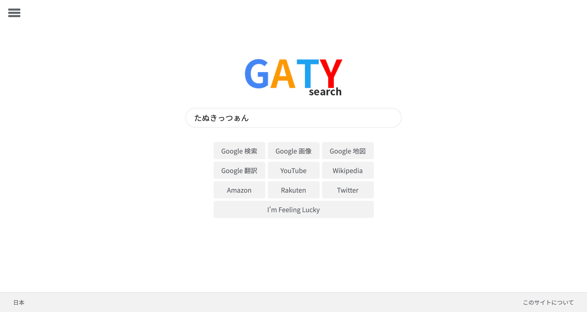
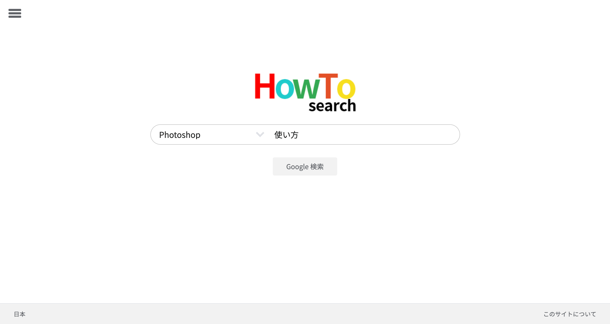
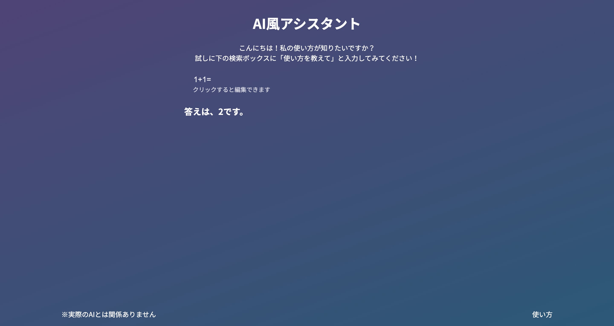

作品一覧
GATY search
PC/スマホ
ダークモード
HTML/CSS/JavaScriptで作った初めての作品です。いろいろなサイトで並行して検索するのが不便だったので作りました。
Google, Amazon, Twitter, YouTubeなどのサイトで検索できるサイトです。もともとGATYのみだったのでこの名前になりました。読み方は「ガーティーサーチ」です。

HowTo search
PC/スマホ
ダークモード
GATY searchの見た目をそのままに、よく使うツールや学校で使うツールの使い方を検索するのに便利なサイトを作りました。

AI風アシスタント
PC/スマホ
AI風の見た目のボットです。何となくAIっぽいものを作ってみたくて作ったのでAIではありません。
電卓機能やGoogle検索、Wikipediaでの調べ物、日本語と英語の翻訳、コイントスなどができます。
スキル
| 使えるツール | 習熟度 | 代表作 |
|---|---|---|
| HTML | ★★★★☆ | 当ポートフォリオ |
| CSS | ★★★☆☆ | GATY search |
| JavaScript | ★★☆☆☆ | AI風アシスタント |
| Unity | ★☆☆☆☆ | |
| Photoshop | ★★★☆☆ | |
| Illustrator | ★★★☆☆ | |
| Premiere Pro/Rush | ★★★☆☆ | |
| GarageBand | ★★★☆☆ | November 2019 |